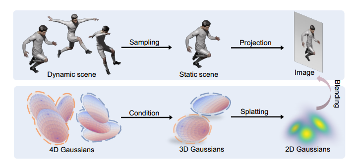
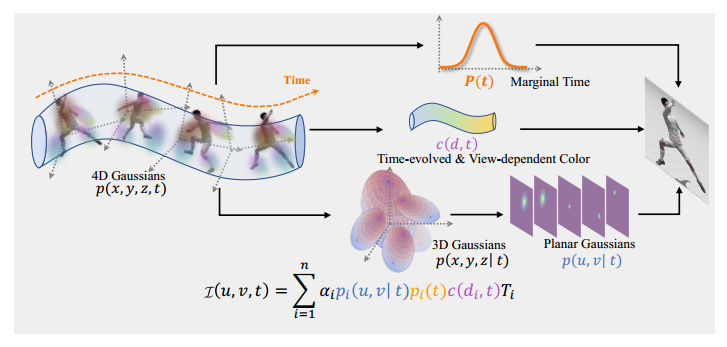
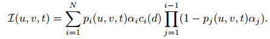
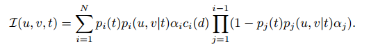
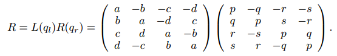
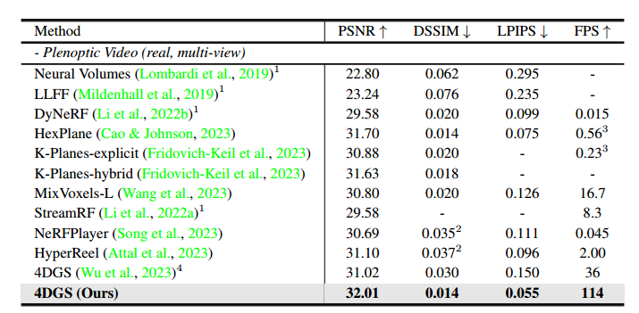
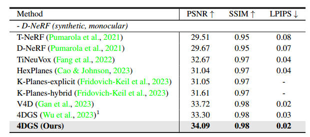

论文泛读之RT_4DGS
本文最后更新于 2025年11月11日 晚上
单目动态＋多视角视频：REAL-TIME PHOTOREALISTIC DYNAMIC SCENE REPRESENTATION AND RENDERING WITH 4D GAUSSIAN SPLATTING [ICLR2024] paper
😄contribution:
- 提出连贯的4DGS模型和渲染管线
- 引入4D球谐函数
- SOTA


⛺method:
- 3DGS引入时间属性升维至4DGS，渲染公式变成：

表示像素处第个高斯在时间的概率密度。
联合分布可以分为边缘分布和条件分布的乘积：
这里假设和是独立的,于是上面的式子就变成：

接下来就是如何表示4DGS：
- 协方差矩阵由缩放矩阵 和4D旋转矩阵

组成。由左右旋转四元数构建。
代表了这个 4D 高斯基元所建模的场景元素在 “存在周期”或“最显著出现” 的时间中心。
(方差)： 决定了它在时间轴上的持续时间（即，从 向前后延伸的程度）。
随后将4DGS切片成3DGS构建条件3DGS:
这里条件化后仍为3DGS，因为多元高斯的条件分布和边缘分布也为高斯分布。即也是一维高斯分布。这个条件化的含义是在时间步下3DGS是什么样的，相当于沿时间切片。这里的推导可以看知乎一位专业人士的回答。
- 4D球谐函数：
为了更好地理解4D SH，我们需要先回顾一下 3D球谐函数（3D Spherical Harmonics, 3D SH） 在图形学中的作用。
- 在3DGS中，每个GS点的颜色是视点相关的。这种视点相关性通常通过 3D 球谐函数来编码和建模。
- 目的： 用少数几个系数（如 阶，共 个系数）来近似描述物体表面在不同视角下呈现的颜色。
- 输入： 视线方向 （一个3D向量）。
- 输出： 沿着该视线方向观测到的颜色 。
- 4D 球柱谐波 (4D SH) 的提出与解释
- 在动态场景中，不仅视角 会影响颜色，时间 也会影响颜色。因此，颜色变成了 。
在 3D GS 中，颜色函数 的近似表示为：
在 4D GS 中，颜色函数 变成了：
这里，关键在于 3D SH 系数 不再是固定的常数，而是随时间 变化的函数 。
- Loss函数：仅使用渲染损失作为监督信号。
总的来说这篇文章是将3DGS升维到4DGS，不像之前的4DGS和Deformable 3DGS那样是规范场和形变场那套范式，更像4D一点。
⭐experiment:


论文泛读之RT_4DGS
https://atat1010.github.io/2025/11/11/papers_note/RT_4DGS/